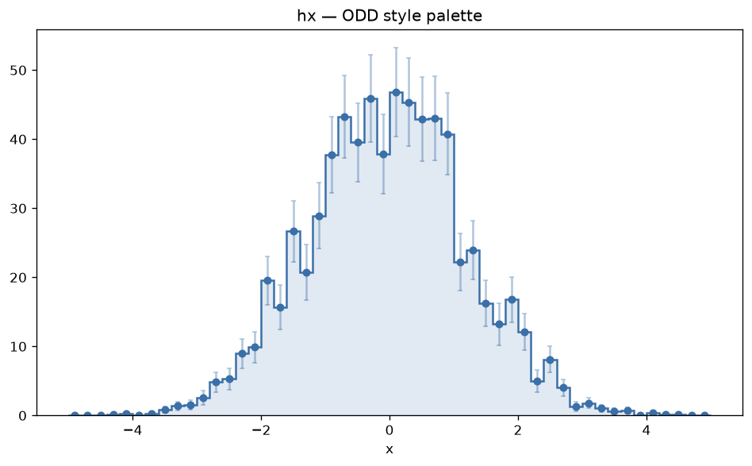
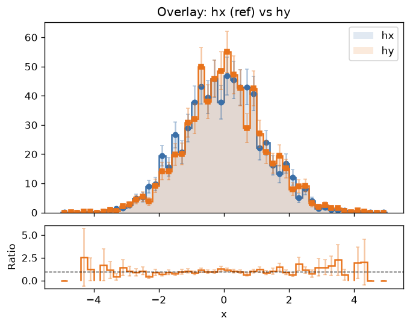
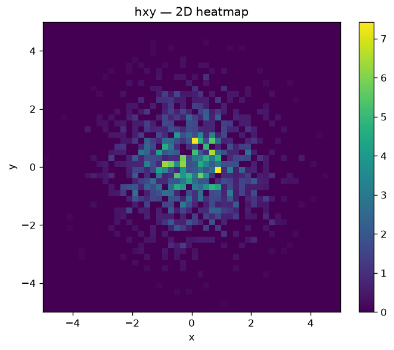
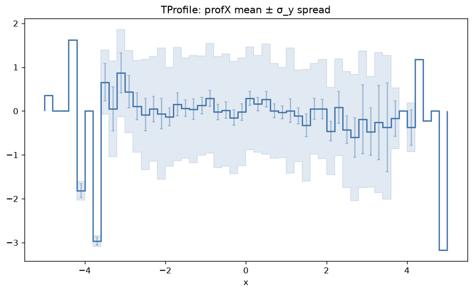
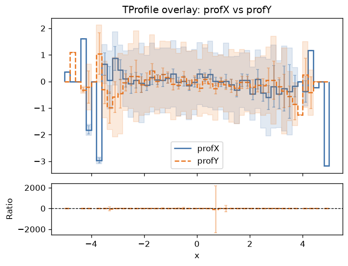
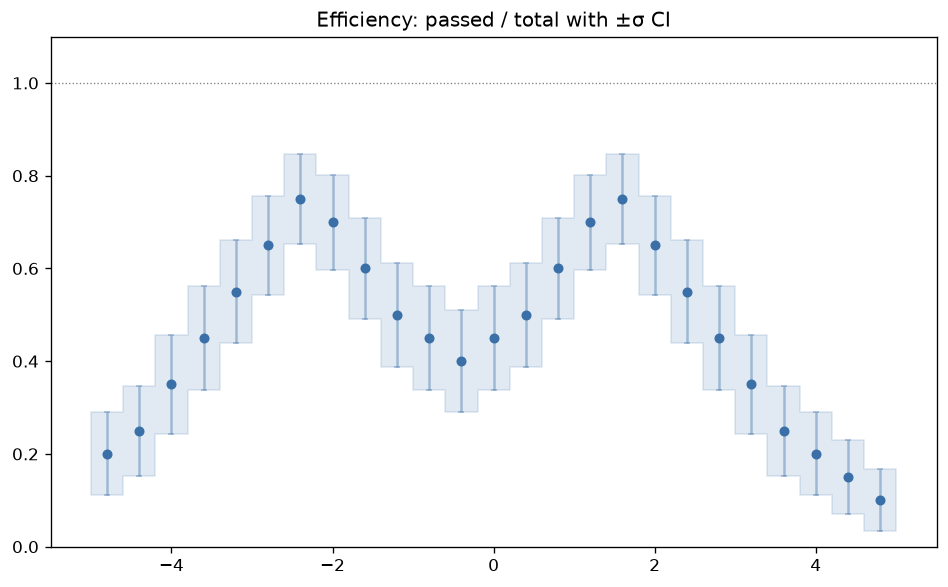
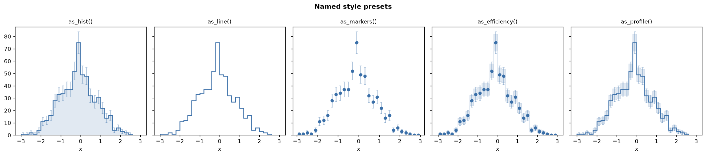
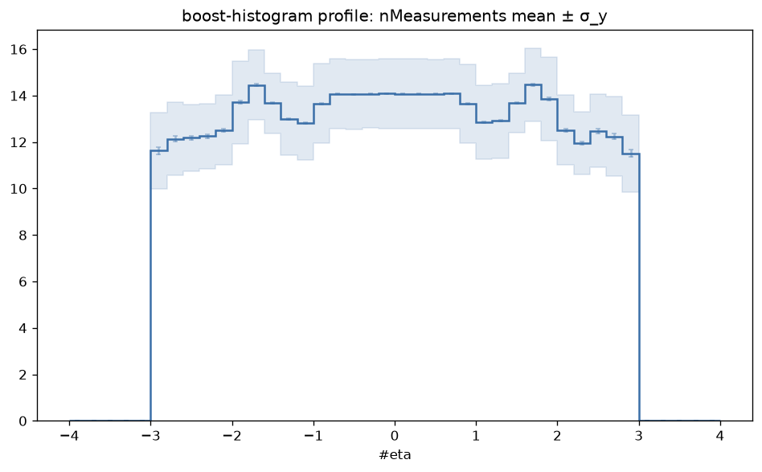
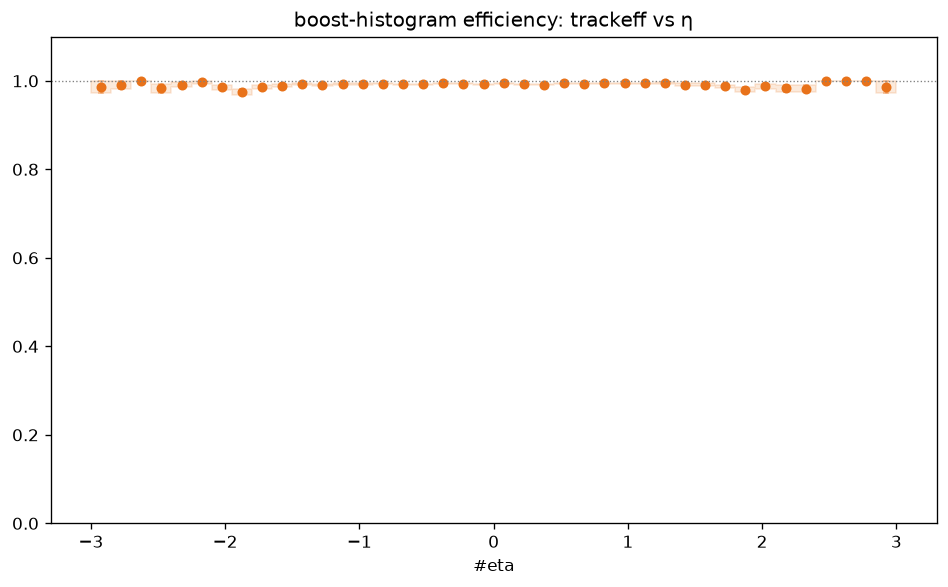
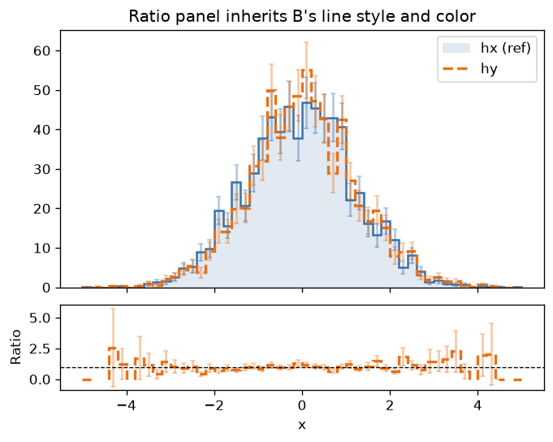

Examples
Auto-generated
Matplotlib and Plotly outputs are regenerated automatically each time the documentation is built. The build fails if any example cannot be produced, ensuring the examples always reflect the current state of the library. Terminal output is rendered from the same ROOT data at build time.
The examples below use the ODD colour palette from
StyleSet. ROOT examples use
unrooted.io.root; boost-histogram examples
use unrooted.io.boost. Both produce the
same Histogram type and are passed to
the same plot functions.
1D histogram

46.8 │ ○ ○
│ ○ ○○
│ ○ ○ ○○○○
│ ○○○ ○○○○○
│ ○○○○○○○○○○
35.1 │ ○○○○○○○○○○
│ ○○○○○○○○○○
│ ○○○○○○○○○○
│ ○○○○○○○○○○○
│ ○ ○○○○○○○○○○○
23.4 │ ○ ○○○○○○○○○○○ ○
│ ○○○○○○○○○○○○○○○
│ ○ ○○○○○○○○○○○○○○○
│ ○○○○○○○○○○○○○○○○○○ ○
│ ○○○○○○○○○○○○○○○○○○○○
11.7 │ ○○○○○○○○○○○○○○○○○○○○○
│ ○○○○○○○○○○○○○○○○○○○○○○○
│ ○○○○○○○○○○○○○○○○○○○○○○○ ○
│ ○○○○○○○○○○○○○○○○○○○○○○○○○○○○
│ ○○○○○○○○○○○○○○○○○○○○○○○○○○○○○○○○○
0 └──────────────────────────────────────────────────→ x
-5 -4 -3 -2 -1 0 1 2 3 4 5
Overlay with ratio panel

55 │ ✚
│ ✚
│ ✚ ✚✚
│ ✚ ⊕✚⊕✚
│ ⊕ ⊕✚⊕⊕⊕○
41.3 │ ⊕ ⊕✚⊕⊕⊕○⊕
│ ○⊕⊕⊕⊕⊕⊕⊕○⊕
│ ○⊕⊕⊕⊕⊕⊕⊕○⊕
│ ⊕⊕⊕⊕⊕⊕⊕⊕○⊕
│ ⊕⊕⊕⊕⊕⊕⊕⊕⊕⊕⊕
27.5 │ ○ ⊕⊕⊕⊕⊕⊕⊕⊕⊕⊕⊕✚
│ ○ ⊕⊕⊕⊕⊕⊕⊕⊕⊕⊕⊕✚○
│ ○○⊕⊕⊕⊕⊕⊕⊕⊕⊕⊕⊕⊕⊕
│ ○ ⊕⊕⊕⊕⊕⊕⊕⊕⊕⊕⊕⊕⊕⊕⊕ ✚
│ ○○⊕⊕⊕⊕⊕⊕⊕⊕⊕⊕⊕⊕⊕⊕⊕⊕✚○
13.8 │ ⊕⊕⊕⊕⊕⊕⊕⊕⊕⊕⊕⊕⊕⊕⊕⊕⊕⊕⊕⊕
│ ○⊕⊕⊕⊕⊕⊕⊕⊕⊕⊕⊕⊕⊕⊕⊕⊕⊕⊕⊕⊕○
│ ○⊕⊕⊕⊕⊕⊕⊕⊕⊕⊕⊕⊕⊕⊕⊕⊕⊕⊕⊕⊕⊕⊕✚⊕
│ ⊕⊕○⊕⊕⊕⊕⊕⊕⊕⊕⊕⊕⊕⊕⊕⊕⊕⊕⊕⊕⊕⊕⊕⊕⊕⊕
│ ○⊕⊕⊕⊕⊕⊕⊕⊕⊕⊕⊕⊕⊕⊕⊕⊕⊕⊕⊕⊕⊕⊕⊕⊕⊕⊕⊕⊕⊕⊕✚⊕✚✚
0 └──────────────────────────────────────────────────→
○ hx ✚ hy
2 │ ✚ ✚ ✚✚
│ ✚ ✚
│ ✚
│ ✚ ✚ ✚✚
│ ✚ ✚ ✚ ✚✚ ✚ ✚
1 │··········✚✚✚·✚·✚·✚✚··✚✚··✚✚·✚··✚·················
│ ✚ ✚ ✚ ✚ ✚ ✚
│ ✚ ✚ ✚
│ ✚ ✚
│✚ ✚ ✚
0 └──────────────────────────────────────────────────→ x
-5 -4 -3 -2 -1 0 1 2 3 4 5
2D histogram

TProfile with spread
Loaded from a ROOT TProfile object. values are per-bin means; the shaded
band shows mean ± σ_y (standard deviation of the profiled quantity); error bars
show ±SE (standard error of the mean).


Efficiency histogram
Loaded via load_efficiency() from a pair of TH1 histograms
(passed / total). Values are per-bin efficiency; the shaded band and error
bars show the Gaussian ±σ confidence interval, clamped to [0, 1].

Named style presets
All five presets applied to the same histogram with the ODD primary color.

| Preset | Line | Marker | Fill | Errors | Spread |
|---|---|---|---|---|---|
as_hist() |
solid | – | ✓ | bar | – |
as_line() |
solid | – | – | – | – |
as_markers() |
– | ○ | – | bar | – |
as_efficiency() |
– | ○ | – | bar | band |
as_profile() |
solid | – | – | bar | band |
boost-histogram: profile
Converted from a boost_histogram.Histogram with Mean storage via
unrooted.io.boost.load. values are
per-bin means; the shaded band shows mean ± σ_y (standard deviation of
individual measurements); error bars show ±SE (standard error of the mean).

boost-histogram: efficiency
Converted via
unrooted.io.boost.load_efficiency
from a pair of Double-storage histograms (accepted, total). The shaded band
and error bars show the Gaussian ±σ confidence interval, clamped to [0, 1].

Ratio panel with styled B
The ratio panel inherits the line color, line style, width, and error display
from B's HistogramStyle. Here B is drawn with a dashed line.
